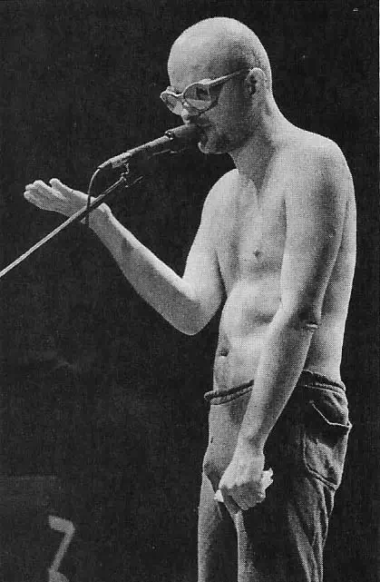
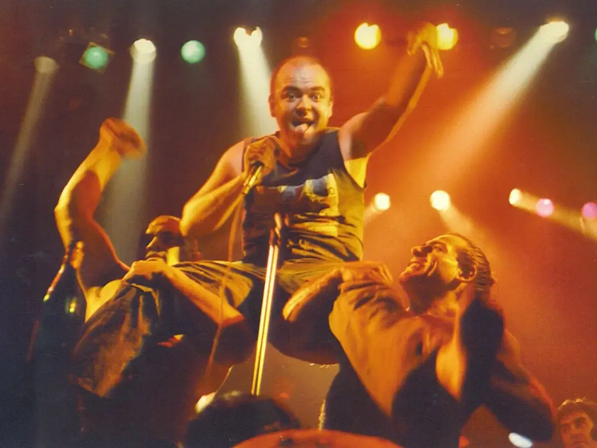

Luca not dead

Pagina tributo a la vida de Luca Prodan
fundador de Sumo e influencia del rock nacional en Argentina.

Luca Prodan fue un músico y cantante italiano-escocés reconocido por su talento y su papel influyente en la música rock y new wave.
Nació el 17 de mayo de 1953 en Roma, Italia, y falleció prematuramente el 22 de diciembre de 1987 en Buenos Aires, Argentina. A pesar de su corta vida, Prodan dejó una huella duradera en la escena musical.
Prodan se crió en una familia de artistas y académicos. Su padre, un destacado físico italiano, y su madre, una pianista y profesora de música escocesa, le inculcaron un profundo amor por las artes y la cultura. A temprana edad, Luca mostró un talento musical excepcional y comenzó a tocar varios instrumentos, incluyendo el piano, la guitarra y el bajo.
En la década de 1970, Prodan se mudó a Londres, donde se sumergió en la floreciente escena punk y new wave. Fue allí donde fundó la banda "Sumo" en 1981, una agrupación que mezclaba elementos del punk, el reggae y el rock. Sumo se destacó por su enérgico estilo musical y letras poéticas que reflejaban la experiencia personal y las luchas de Prodan.
En 1985, Luca Prodan decidió trasladarse a Buenos Aires, Argentina, donde encontró una conexión profunda con la cultura y la música del país. Allí formó una nueva versión de Sumo con músicos argentinos y lanzó su álbum debut, "Divididos por la felicidad". El disco fue un éxito inmediato y se convirtió en un referente del rock argentino de la época.
A pesar de su éxito musical, Prodan luchó con problemas personales y adicciones a lo largo de su vida. Su estilo de vida excesivo y autodestructivo comenzó a pasar factura a su salud. Trágicamente, Luca Prodan falleció a los 34 años debido a una insuficiencia respiratoria, dejando un legado musical inmenso y una huella imborrable en la música argentina.

La vida de Luca Prodan estuvo llena de altibajos, pero su talento y pasión por la música fueron innegables. Su influencia se extiende más allá de su corta carrera, y su música continúa siendo celebrada y admirada por generaciones posteriores. Luca Prodan será recordado como un artista talentoso y un alma atormentada que dejó una profunda marca en la historia del rock.
Si querés saber mas sobre la vida de Luca
clickeá acá.